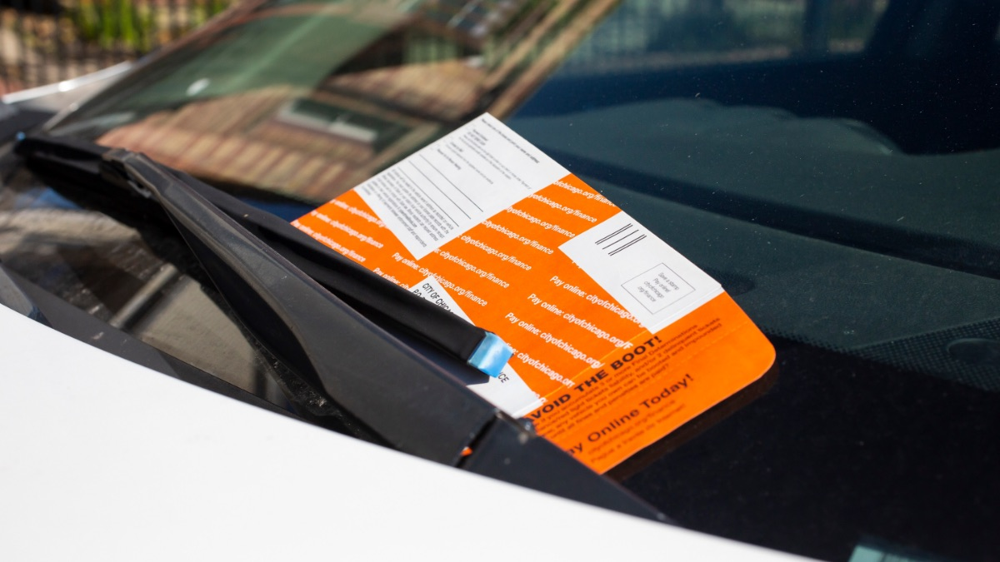
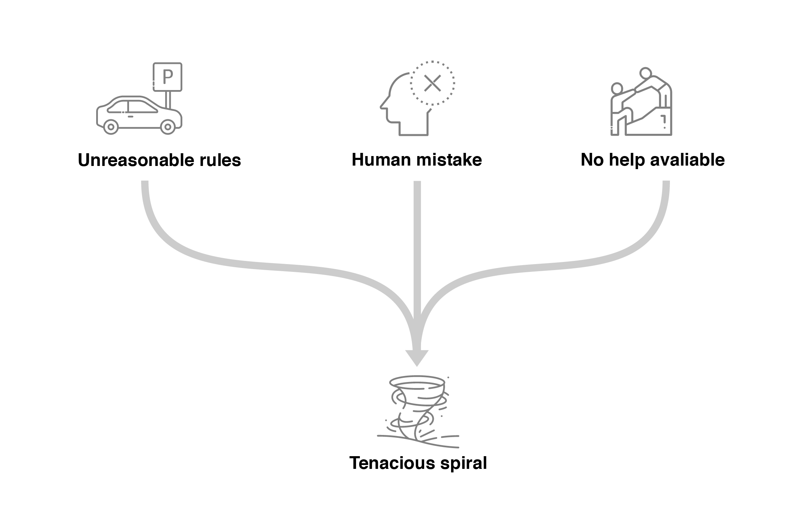
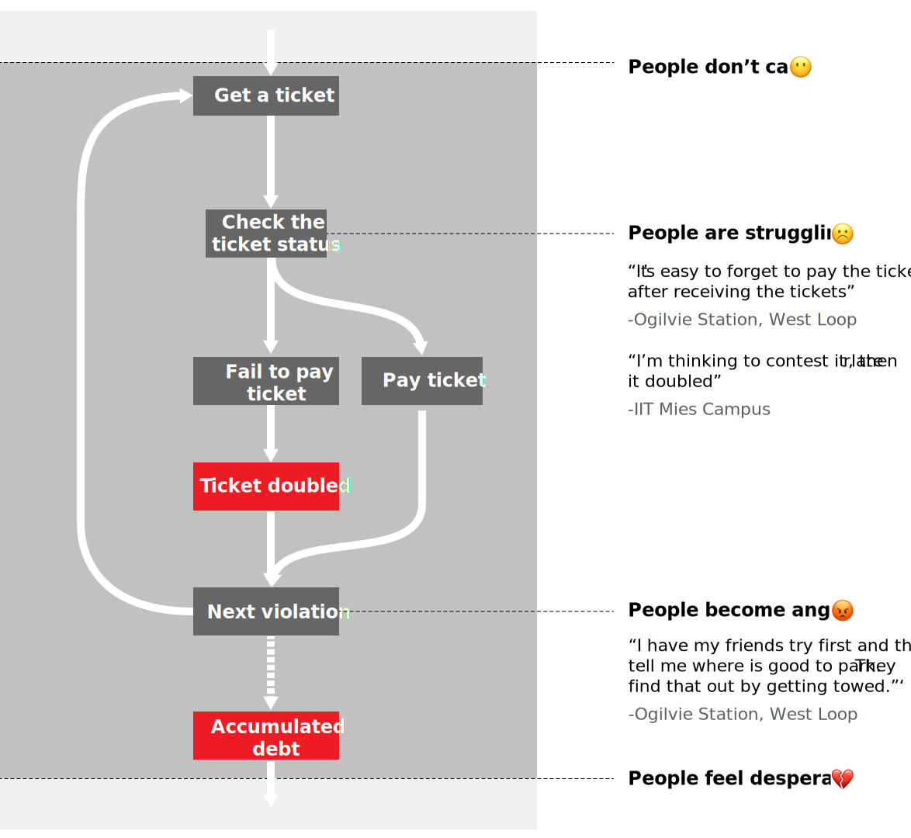

Right Time
Research Methods literature review, Interview, Case study, Prototyping, Tesing
Tools Figma, Illustrator
This product goes a step further than the existing City-of-Chicago website. Right Time helps people avoid penalties and future infractions, by offering personalized suggestions, step by step navigation, and assistance with next steps.
Challenge
Tasked by the City Clerk's office, the Institute of Design's Service Systems Design Workshop worked to advance equity among low-income, minority Chicago residents in the area of non-moving violations
Why should we care

“I lost my car and I lost my job. Now my family can’t eat over a parking ticket.”
“I am 64 and I’m still on my payment plan of $1300.”
"The city is a bunch of fraud; they don't tell you
(of your ticket increase) until it doubles."
"It's all about the money. No other city is like this. Chicago is all about the money. You can get a ticket
for anything."
What lead to this situation？
After synthesizing our primary research, the pattern popped up. It shows that residents usually get trapped with this system by rather their little mistake, or confusion of the traffic rules -- some of these rules are even unreasonable. This little accident gives residents an initial non-moving violation ticket. Without dealing with it properly, the ticket can easily double, the penalty will come, eventually, debts become unaffordable.
The City of Chicago claims that they are trying hard to help these residents, while the residents don’t feel the help is available.
Job to be done
Why do city want to do that？
Intervention
Where we should intervene:

Most of our participants thoughts the fine of the non-moving violation is too high, while people with different income levels react so differently on the same amount of penalty. Unfortunately, for those who was already struggling with paying the initial ticket, more bill is coming.
How can we help?
We created a service with which, residents can easily manage the payment process by following a step by step guide when they receive a ticket—and feel confident in avoiding such expensive vehicle violations moving forward.
By scanning the QR code or providing a driver’s license, residents can directly pay their tickets, get tailored and practical suggestions to avoid similar violations, and get help if they haven’t yet decided whether to pay.
Residents can choose their preferred next step to deal with a ticket. Along with the action they choose, we will assist them through the whole process by providing relevant information and reminding them of important dates.
Residents will get personalized messages and reminders from the assistant, including the due date, important links, and relevant ticket information.